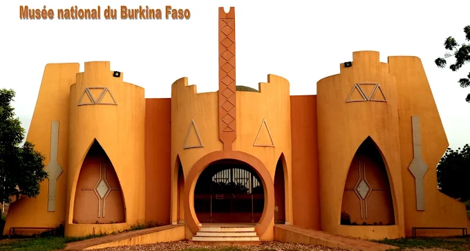

DESCRIPTION DU MUSEE NATIONAL DU BURKINA FASO
Le Musée National du Burkina Faso est l'institution culturelle majeure chargée de collecter, conserver et valoriser le patrimoine matériel et immatériel des différentes communautés du pays. Il est conçu comme un grand parc culturel qui mélange modernité et traditions locales :
- ➤Un style architectural unique
- ➤Le Pavillon de l'histoire et des symboles
- ➤Le musée en plein air (Espace Habitats)
- ➤Le parc ethnobotanique
Les pavillons d'exposition circulaires et reliés entre eux s'inspirent directement de l'organisation des concessions villageoises traditionnelles. L'architecture utilise des codes de style soudano-sahélien.
Un espace couvert dédié aux collections de masques, de statues rituelles, d'armes anciennes, de parures et d'objets sacrés de plus de 60 ethnies burkinabè.
C'est la section la plus célèbre du site. Elle regroupe des répliques exactes de concessions construites par des artisans locaux. On y trouve l'habitat traditionnel Kasséna (peintures murales géométriques), l'habitat Mossi, Peul, ou encore Dagari, construits en terre et en paille respectant les techniques ancestrales.
Le domaine de 30 hectares conserve également une végétation naturelle locale, servant de sanctuaire vert au milieu de la ville de Ouagadougou.
HISTORIQUE DU MUSEE NATIONAL DU BURKINA FASO
L'histoire du musée s'étend sur plusieurs décennies et suit l'évolution politique du pays :
- ➤1962 (Création)
- ➤1980 à 2000 (L'errance et le projet)
- ➤2000 (Pose de la première pierre)
- ➤2004 (Inauguration du siège)
Fondé par le texte de loi n°23/62-AN sous la présidence de Maurice Yaméogo. À ses débuts, le musée ne possède pas de bâtiment propre et ses collections voyagent dans des locaux provisoires.
Les objets sont stockés ou exposés temporairement dans différents lieux de Ouagadougou (comme l'actuel Centre National de la Recherche Scientifique et Technologique). Le projet d'un grand complexe moderne sur le site actuel de Dassasgo germe à la fin des années 1990.
Le démarrage officiel du grand chantier sur le site actuel de 29 hectares est lancé.
Ouverture officielle du premier pavillon d'exposition fonctionnel sur le site définitif, permettant enfin de réunir l'administration et les collections.
En somme, le Musée national du Burkina Faso est un lieu essentiel de conservation et de valorisation du patrimoine culturel burkinabè. Il contribue à préserver l'histoire, les traditions et l'identité du Burkina Faso pour les générations présentes et futures.
- Emplacement: situé à l'extrémité de l'Avenue Charles-de-Gaulle
- Horaires: Du mardi au samedi
- Accès: payant
- Géolocalisation: 🗺️ Calculer l'itinéraire vers le Musée